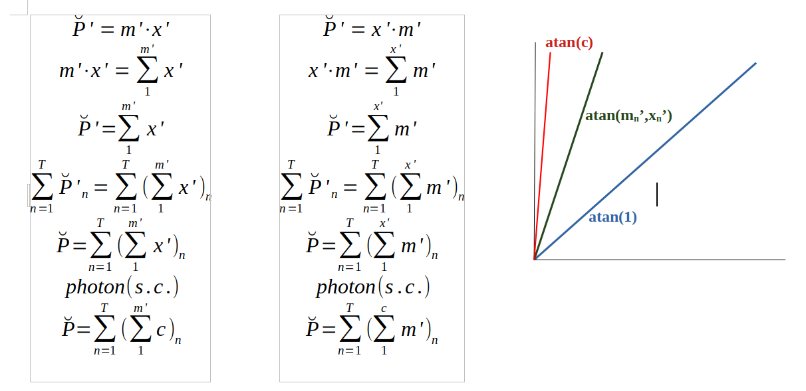

PRELIMINARY (On the go until further revision. Read with tweezers)
We want to call 'inertial factor' to any factor applied to the diff(erential) variable which in turn implies in any way that it can be understood as another diff function identifying a slope which can be measured in angular units (e.g. radian). Therefore, it can be shown as a phasor being able to rotate on a circumference with angles determined by such slope value. Any change is a rotation from an initial angular position to a new one. One special case is that in which such slope is the same diff variable, finally meaning an aritmethic power of two. Doing so, we are defying infinitum values that other approachs can reach. There's not an infinite value but an arctangent of a right angle, that between two lines or planes with no projections from one to the other. There is enough evidence and experience of its existence in what is and is existing.
Being such factor the mass as an example, this implies first that it is a slope or diff function, and so with a possible primitive one which can be reached by this diff accumulation. This accumulation in order to fullfill some units rules will loose the time as inherited dimension in the denominator. Matching this function to a new given variable should supposedly consider the lost time dimension. It was not the case but that new variable has to be understood as the accumulation in the whole time. It has not to be multiplied by time for the equality to occur.
Continue (probably with complex numbers) ...
This so simple algorythm tries to be the implementation of a rigorous aproximation to the measure of natural magnitudes, understood as the multiplication of an absolute number by an unit which is chosen and made inmutable in time. These magnitudes are related among them by something more than an absolute mathematic equality. It is an equality forming Functions. Functions that take into account the equality through its independent variable range. Maybe the most important, those with Time being such variable.
On the other way, there is not any 'a priori' need to manage the aritmethic división operation. They have not to be understood like any kind of cast. Any cast, only when needed being the numerator a whole thing an the denominator something by such thing is divided and probably destroyed
Because all them, the magnitud values we call 'primitives' are correlated with a simple 1,2,3 ... n serie being the number of such units it contains. Functions can be known showing an infinite range of values or alternatively and more usual, tabular data in units of a time. In the former case, there is uncertainty among annotated values. The chosen algorythm deals with that trying to be neutral.
Finally the evolution graph show those differential values versus the time in its units, days. Therefore, the labels have a format of month/day, uniquely identifying them. Adding possible multipliers as any kind of inertial factor (mass, specific heat, latent heat, etc.) the result is an expressión of impulse or power in any way. A factor of density may be associated with the concept of concentration or fraction, being the SIC or SIF an expression of a partial amount of the total. On the other hand, it can be useful with continental ice with another dynamic. The big differences among sea and continental ice probably lie on both the lesser constant liquid phase and temperature of the inner substrate being able to reach lower values than in water at least for some time.
Also 'we' are trying to relate this possible indicator with the temperature and specific humidity in different layers of the GFS levels until the 10HPa, being stationally the hot or cold vertical cryospheric focus. Such evolution could be interesting to open a more precise understanding of polar high level vortex. We would begin with the measure exactly in the polar spot at lat[90] and lat[-90] being the theoric place of maximum linear velocity due to the rotation of the Earth. Being only a person I was very satisfied with any other related devolopment by other persons or instituions. This person believe that this couldn't be dedicated to personal or enterprise commmerce. Too much simple. Nothing to gain in the first minute. A lot of work to do.
The included Net effect is no more than the add with signs of such differential values for the period of one year. The intent is to reach a value for an enough reduction from days to years.
Note1: We observe any kind of possible spurious values in some of the series. Any help will be always welcome.
Note2: The Net Effect algorythm is still under revision.
"import xarray as xr\n"
"import pandas as pa\n"
"da=xr.open_dataset(\"" & RutaFichero & "\", engine = \"netcdf4\")\n"
"da=da[\"ice\"]\n"
"das=da.sel(lat=slice(-90,-45))\n"
"dan=da.sel(lat=slice(45,90))\n"
"das.groupby(\"time\").sum(...)"
"dan.groupby(\"time\").sum(...)")
"da.close()"
Note: Possible spurious values are normalizaed to the previous one.
Dim res As Result
Dim DiffN As Float
Dim DiffS As Float
Dim ADiffN As Float
Dim ADiffS As Float
res = $con.Exec("SELECT * FROM main ORDER BY fecha")
Dim RFechas As Date[] = res.All("fecha")
Dim RSifN As Float[] = res.All("sifn")
Dim RSifS As Float[] = res.All("sifs")
ADiffN = RSifN[0]
ADiffS = RSifS[0]
For i As Integer = 1 To RFechas.Max
DiffN = RSifN[i] - RSifN[i - 1]
If DiffN > 1000 Or DiffN < -1000 Then DiffN = ADiffN
DiffS = RSifS[i] - RSifS[i - 1]
If DiffS > 1000 Or DiffS < -1000 Then DiffS = ADiffS
Try $con.Exec("INSERT INTO [&1] VALUES (&2, &3, &4)", "dmain", RFechas[i], DiffN, DiffS)
If Error Then
Print "Error: No se han podido insertar datos calculados en la tabla 'dmain'."
Return
Endif
ADiffN = DiffN
ADiffS = DiffS
Next